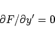
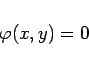

Inhalt Index DeskTop Bronstein

 Differentialgleichungen Gewöhnliche Differentialgleichungen Differentialgleichungen 1. Ordnung Singuläre Integrale und singuläre Punkte
Differentialgleichungen Gewöhnliche Differentialgleichungen Differentialgleichungen 1. Ordnung Singuläre Integrale und singuläre Punkte


|  | (9.17b) |
genügt.
|  | (9.17c) |
einer singulären Integralkurve wird ein singuläres Integral genannt. Die Einhüllenden der Integralkurven sind singuläre Integralkurven (s. Abbildung); sie bestehen ihrerseits ebenfalls aus singulären Elementen.
Die Eindeutigkeit der Lösung (s. Existenzsatz) geht für alle Punkte einer singulären Integralkurve verloren.